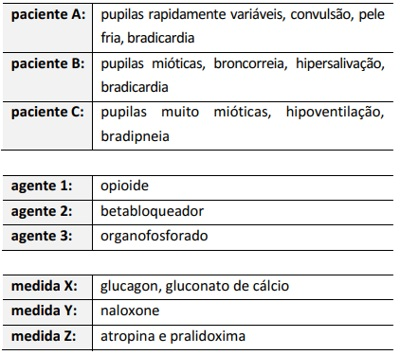

Quanto à intoxicação exógena, considere as seguintes possibilidades de quadros clínicos, agentes causadores e medidas de tratamento específicas. A partir dessas informações, assinale a alternativa que apresenta a correlação mais adequada entre o quadro clínico, o agente causador e a medida de tratamento.

Homem, 55 anos, é trazido ao pronto-socorro após ingerir grande quantidade de uma substância que causou quadro de sudorese profusa, bradicardia, miose, hipotensão e broncorreia. Qual é a substância que apresentaria efeito similar quando ingerida em grande quantidade?
Um menino de dois anos de idade, previamente hígido, foi levado ao pronto-socorro infantil com histórico de sonolência súbita. O pai relatou que o menino estava tratando um quadro de infecção de vias aéreas superiores com lavagem nasal e inalação com soro siológico havia três dias. No presente dia, pela manhã, o pai não havia achado o soro siológico para realizar a lavagem nasal, então usou a medicação que ele utilizava normalmente para “descongestionar o nariz”. Entre as alternativas a seguir, assinale aquela que apresenta a provável causa da intoxicação exógena no caso clínico acima e o seu tratamento adequado, respectivamente
São considerados medicamentos que causam quadro de intoxicação com alteração pupilar tipo midríase:
Menino, 2 anos de idade, é levado à UPA com relato de sonolência, naúseas e vômitos há 50 minutos. Após inicio do quadro, foi constatado que o menor ingeriu bolinhas de naftalina. A genitora informa ter colocado o produto, há dois dias, na gaveta que se encontrava aberta; que as bolinhas estavam em um pacote com 5 unidades, de menos de 1cm de diâmetro, e que 3 delas foram encontradas. Ao exame, criança hipoativa, hidratada, eupneica, corada, afebril. Observa-se hipersalivação. Sem outros achados anormais no momento. No caso de ocorrer a complicação, considere as opções abaixo e indique a conduta adequada:
Menino, 2 anos de idade, é levado à UPA com relato de sonolência, naúseas e vômitos há 50 minutos. Após inicio do quadro, foi constatado que o menor ingeriu bolinhas de naftalina. A genitora informa ter colocado o produto, há dois dias, na gaveta que se encontrava aberta; que as bolinhas estavam em um pacote com 5 unidades, de menos de 1cm de diâmetro, e que 3 delas foram encontradas. Ao exame, criança hipoativa, hidratada, eupneica, corada, afebril. Observa-se hipersalivação. Sem outros achados anormais no momento. O paciente, em questão, pode apresentar complicação decorrente de:
Menino, 2 anos de idade, é levado à UPA com relato de sonolência, naúseas e vômitos há 50 minutos. Após inicio do quadro, foi constatado que o menor ingeriu bolinhas de naftalina. A genitora informa ter colocado o produto, há dois dias, na gaveta que se encontrava aberta; que as bolinhas estavam em um pacote com 5 unidades, de menos de 1cm de diâmetro, e que 3 delas foram encontradas. Ao exame, criança hipoativa, hidratada, eupneica, corada, afebril. Observa-se hipersalivação. Sem outros achados anormais no momento. Considerando o potencial tóxico do produto, e que a criança permaneceu por 8 horas em observação, sem sintomas, indique a conduta correta:
Um pré-escolar de 4 anos e 12 kg foi submetido a cirurgia abdominal de baixa complexidade com anestesia geral, sem intercorrências. Ao nal do procedimento, recebeu uma dose adicional endovenosa de fentanil e cetoprofeno para analgesia. Veio direto para enfermaria pediátrica, 1 hora após o nal da cirurgia. Após 30 minutos, você é chamado para avaliar a criança, pois a mãe diz que ela não acorda. Ao exame físico: corada, hidratada, acianótica, anictérica e afebril. Frequência cardíaca 110 bpm, frequência respiratória 10 irpm, pressão arterial 95 x 55 mmHg, saturação periférica de oxigênio 90% em ar ambiente. Ausculta respiratória mostra murmurio vesicular simétrico, sem ruídos adventícios. Ausculta cardíaca revela ritmo regular, duas bulhas normofonéticas, sem sopros, pulsos centrais e periféricos fortes, tempo de enchimento capilar 2 segundos. Abdome sem anormalidades. Pupilas mióticas e isocóricas. Com base no quadro clinico acima, qual o tratamento farmacológico imediato mais adequado para esta situação clínica?
A “crise dos opioides”, muito citada na literatura estadunidense, decorre do uso abusivo e indevido desta classe de drogas. Com casos de intoxicação cada vez mais frequentes, cabe ao pro ssional de saúde estar apto a reconhecer as manifestações inerentes ao quadro. O melhor preditor da toxicidade por opioides é:
Uma mulher de 23 anos de idade foi encaminhada para a UTI, após tentativa de suicídio, com quadro de agitação, delirium, em midríase, hipertérmica, taquicárdica, hipertensa, pele seca, quente e avermelhada. As mucosas estão secas. A causa mais provável pela sintomatologia de intoxicação exógena da paciente, dentre as substâncias abaixo, é
Jovem, 21 anos, é admitido no pronto atendimento com suspeita de intoxicação exógena por droga anticolinérgica. Acompanhantes que o trouxeram referem que estavam em uma festa tomando chá alucinógeno. Assinale a alternativa que apresenta o quadro clínico mais compatível.
Paciente de 46 anos de idade, agricultor, é levado por familiares para a emergência após ser encontrado desacordado em um galpão próximo à plantação onde trabalha. Durante a avaliação, o paciente encontra-se confuso, desorientado em tempo e espaço e suas vestes estão úmidas. Observa-se uma respiração ruidosa, espasmos musculares e miose. Diante desse cenário, quais são: o provável diagnóstico e o antídoto a ser administrado?
Pré-escolar de 3 anos e 4 meses de idade deu entrada no pronto-socorro apresentando rigidez e espasmos musculares e hipertermia. Não apresentava di culdade respiratória. Ausculta cardíaca sem anormalidades. Sem história prévia de doença cardíaca. O paciente estava recebendo oxigenoterapia quando um primo dele, de quatro anos, deu entrada no mesmo hospital, com quadro semelhante. Ambos haviam passado as últimas 12 horas na casa da avó materna, que há anos faz tratamento de esquizofrenia e hipertensão arterial. As evidências clínicas dessa história induzem a necessidade de o médico investigar
Um escolar de oito anos de idade foi levado ao serviço de emergência, com história de rubor e sonolência há cerca de 30 minutos. Foi encontrada uma cartela de comprimidos de anlodipino, de uso de seu pai, vazia ao lado de sua cama. A mãe relata que ele vinha sofrendo bullying na escola devido à obesidade. Ao exame, o paciente apresenta rubor, sonolência e hipotensão (70 x 40 mmHg). Com base nesse caso hipotético, é correto a rmar que, após a monitorização e a estabilização inicial, deverão ser realizadas as seguintes medidas:
Uma mulher de 23 anos de idade foi levada por seus familiares ao setor de emergência, por rebaixamento do nível de consciência. Ela fora encontrada em sua casa, pelos familiares, desacordada e ao lado de embalagens vazias de comprimidos, em especial, os que sua avó, em cuidados paliativos, utiliza para controle da dor. Tem antecedentes de uso de drogas ilícitas e etilismo. Exame físico: letárgica; abertura ocular ao estímulo doloroso; balbucia palavras quando estimulada; e com miose bilateral e bradipneia. Com base nesse caso hipotético, assinale a alternativa que apresenta a melhor escolha de antídoto para a paciente.
A correta correlação entre tóxico e antídoto é:
Criança de 2,5 anos, sexo masculino, foi levada ao pronto-socorro com suspeita de ter ingerido uma caixa de medicamentos. Pais referem que a criança estava brincando com caixas de remédios, com diversos comprimidos no chão e outros na boca. Ao exame físico, o paciente apresenta-se agitado, face avermelhada, com temperatura de 37,8 °C, taquicárdica, pressão arterial de 110 × 80 mmHg, midriática, com boca e olhos secos e FR: 42 ipm. Dentre os seguintes medicamentos, o que mais provavelmente corresponde ao quadro da criança é
Homem, 39a, chega à emergência com confusão mental, náuseas e vômitos há 4 horas. Esposa o encontrou sonolento no banheiro, ao lado de carteias de medicação aparentemente vazias jogadas no vaso sanitário. Antecedentes: depressão; usa amitriptilina. Exame físico: PA=124x78 mmHg, FC=108 bpm, FR=29 irpm, oximetria de pulso (ar ambiente)= 97%, T= 36,5°C. Glasgow 14, pupilas normais, sem dé cits focais. Sem sinais de desconforto respiratório e ausculta respiratória normal. Eletrocardiograma: taquicardia sinusal. Glicemia capilar= 110mg/dL. Gasometria arterial: pH= 7,23; pO₂= 91 mmHg; pCO₂= 15 mmHg; HCO₃= 10 mEq/L; BE= -7 mEq/L, SaO₂= 97%; sódio= 135 mEq/L; creatinina=0,92 mg/dL; lactato= 3,0 mmol/L e cloro= 98 mMol/L. A HIPÓTESE DIAGNÓSTICA É
Menino de 1 ano dá entrada em hospital após quadro convulsivo. Ao exame físico, apresenta midríase, taquicardia, sudorese, hipertensão, piloereção e hiper-reflexia. Na anamnese, a mãe conta que o paciente está, há 2 dias, com obstrução nasal e espirros e, por estar com di culdade para dormir devido à obstrução, usou medicamento em gotas que tinha em casa, nas narinas da criança. Após seu uso, o paciente iniciou o quadro atual. Considerando o agente farmacológico provável, trata-se de uma
Jovem, 21 anos, é admitida no pronto atendimento com suspeita de intoxicação exógena por droga anticolinérgica. Acompanhantes que a trouxeram referem que estavam em uma balada tomando chá alucinógeno. Assinale a alternativa que apresenta o quadro clínico mais compatível.
Nas intoxicações exógenas está indicado a realização de lavagem gástrica e carvão ativado nas primeiras horas. No entanto, existem algumas substâncias que contraindicam esse procedimento. Assinale a alternativa que possui uma substância em que NÃO é indicado esse procedimento.
Paciente de 62 anos de idade é trazida pelos familiares ao serviço de emergência por ter ingerido aproximadamente quarenta comprimidos de amitriptilina 25 mg. A paciente encontrava-se agitada e confusa. Sobre intoxicação por substâncias com efeitos anticolinérgicos, é correto afirmar
Qual é a hipótese diagnóstica mais provável para paciente com história de uso de várias substâncias de abuso e que se apresenta com taquicardia, midríase e hipertensão arterial?
Paciente masculino, 25 anos, é levado por um amigo, desacordado, para a UPA mais próxima de sua casa, na zona rural de Erechim-RS. É prontamente avaliado pelo plantonista, que observa intensa sialorreia, sudorese, lacrimejamento, odor de fezes, e insu ciência respiratória. Seu colega de trabalho, um agricultor de 30 anos, relata que ele tem histórico de depressão e faz uso de “amitrilina diazepam”, mas que, ultimamente, estava parecendo bem-humorado e disposto no trabalho. Diante dessa situação, você imediatamente suspeita de um quadro causado por intoxicação exógena e decide utilizar o seguinte antídoto:
Faça rapidamente o exame inicial do paciente suspeito de intoxicações agudas com inibidores de colinesterase, sem comprometer ou atrasar a sua estabilização. Observe também a presença de odores característicos de solventes químicos na boca, na pele e na roupa do paciente. Considerando o correto:
Uma criança de 3 anos é trazida ao pronto-socorro por ter ingerido, há cerca de 3 horas, alguns medicamentos de sua avó, que tem hipertensão arterial, asma e diabete mellitus. A criança é admitida no hospital com saturação arterial de 97%, frequência cardíaca de 45 bpm, pressão arterial de 60x35 mmHg, frequência respiratória de 18 mpm e glicemia capilar de 250 g/dl. O mais provável medicamento envolvido na intoxicação desta criança é um:
Adolescente, 14 anos de idade, sem antecedentes prévios, ingeriu 20 comprimidos de um anti-hipertensivo. Chegou ao PS sonolento, com PA = 60/20 mmHg, FC= 120 bpm e glicemia capilar = 450 mg/dL. Qual é o anti-hipertensivo que ele deve ter ingerido?
Paciente 23 anos, chega ao pronto atendimento com quadro de intoxicação exógena por paracetamol 750mg, 40 comprimidos há 4 horas, evoluindo com icterícia, para realizar as medidas clinicas o tratamento necessário considerando peso de 70 kg.
Considere as assertivas abaixo em relação às intoxicações exógenas. I - Salvo poucas exceções, administração de carvão ativado isoladamente é a intervenção adequada em caso de intoxicação por ingestão de medicamentos. II - Lavagem gástrica está contraindicada em caso de ingestão de substâncias cáusticas. III - Xarope de Ipeca (para induzir vômitos) está indicado para pacientes que apresentam piora progressiva de sensório. Quais as CORRETAS?
Homem, 60 anos, internado devido a câncer de estômago metastático. Durante avaliação médica, observou-se que o paciente encontrava-se sonolento, com pupilas mióticas e frequência respiratória de 06 IRPM. A medicação mais provavelmente implicada na intoxicação e o antídoto são, respectivamente,
Homem de 30 anos tira uma lata de cerveja da geladeira e rapidamente engole um bocado do seu conteúdo antes de perceber que não era cerveja. Dentro de alguns minutos ele apresenta cólicas abdominais graves, visão turva, espasmos e perda de consciência. A esposa refere a equipe médica que colocou spray de barata na lata de cerveja e tinha deixado na geladeira para tentar eliminar as baratas e esqueceu de avisar ao marido. O pessoal da emergência verifica a embalagem e determina que é um Organofosforado. Para neutralizar a atividade de inibição da colinesterase do veneno de organofosforado, o homem deve receber qual dos seguintes antídotos:
Um paciente de 68 anos começou a desenvolver sintomas neurológicos após episódio de diarreia e vômitos, associados a intoxicação alimentar. Inicialmente seus familiares o notaram lenti cado, evoluindo com di culdade para deambular e sonolência. Ao ser trazido para a emergência, apresentava fasciculações e mioclonias, evoluindo para episódio convulsivo. Tinha antecedente de transtorno bipolar para o qual usava carbonato de lítio há anos. Não havia relato de outras comorbidades. Com relação ao caso, assinale a alternativa INCORRETA.
Revisar: possível letra faltando em enunciado
O uso do carvão ativado está indicado na intoxicação por
Menino de 2 anos deu entrada no pronto-socorro após ter ingerido um frasco de paracetamol. O pediatra de plantão deverá estar atento para o risco de a criança apresenta
Paciente sexo masculino, 45 anos, agricultor, foi levado ao pronto-socorro por quadro de fraqueza, diarreia, hipersalivação, vômitos há duas horas. Sinais vitais: PA: 110 × 70 mmHg, FC: 52 bpm, FR: 24 ipm, SatO₂ : 93% em ambiente. Ao exame físico, pupilas mióticas, sibilos e roncos à ausculta pulmonar e presença de fasciculações. Diante do quadro clínico, o diagnóstico mais provável e seu tratamento:
Mulher, 55 anos, em tratamento de transtorno bipolar há 12 semanas, é admitida no hospital com quadro de dor abdominal, fraqueza muscular generalizada, poliúria e polidpsia. Exames laboratoriais: ureia = 60mg/dL; creatinina = 1,6mg/dL; sódio sérico = 155mmol/L. Diurese = 7,0L/24 horas. EAS: densidade urinária = 1004; pH urinário = 5,1; proteína = 1+; leucócitos = 20 células/campo; cilindros leucocitários e epiteliais. Ressonância nuclear magnética (RNM) abdominal: microcistos abundantes nas regiões cortical e medular de ambos os rins. Pode-se afirmar que o fármaco mais provavelmente relacionado a essa nefropatia é:
Um paciente é admitido no pronto atendimento com quadro de hipersalivação, miose e bradicardia. Familiares relatam que ele apresentou os sintomas após ingerir alguma substância em casa. Qual dos agentes abaixo pode ser responsável pelo quadro apresentado?
Leia o caso clínico a seguir. A mãe, inadvertidamente, enquanto falava ao celular, pegou um solvente na dispensa de sua casa (pensando ser água mineral), colocou-o na mamadeira e deu-o ao seu lho lactente. Logo em seguida (ainda sem ver o que tinha dado) ela observou sonolência excessiva, cianose, hipotermia e bradicardia, levando-o imediatamente ao prontosocorro, onde o pediatra fez diagnóstico de intoxicação exógena. Nesse caso, deve ser prescrito ao lactente:
Leia o caso clínico a seguir. Garoto de cinco anos, cerca de três horas depois que voltou da fazenda com seus avós, inicia quadro de sudorese, lacrimejamento de ambos os olhos, salivação, náuseas e diarreia. Imediatamente, os pais o levam ao pronto-socorro, onde o pediatra colhe a história e observa ao exame físico: bradicardia, miose, broncoespasmo e convulsão. Diante disso, ele faz diagnóstico de intoxicação por:
Avalie o conjunto de manifestações descrito abaixo: 1. Sudorese profusa, sialorreia, hipersecreção brônquica; miose e bradicardia. 2. Euforia, hipertensão arterial, taquicardia e midríase. 3. Mucosas secas, hiperreflexia tendinosa, agitação psico-motora e hipertermia. 4. Náuseas, tremores de extremidades, polidipsia, poliúria e disfunção renal. Assinale a alternativa com a respectiva droga (ou classe farmacológica) que se associa a cada conjunto de manifestações acima.
Leia o caso clínico a seguir. A mãe, inadvertidamente, enquanto falava ao celular, pegou um solvente na dispensa de sua casa (pensando ser água mineral), colocou-o na mamadeira e deu-o ao seu lho lactente. Logo em seguida (ainda sem ver o que tinha dado) ela observou sonolência excessiva, cianose, hipotermia e bradicardia, levando-o imediatamente ao prontosocorro, onde o pediatra fez diagnóstico de intoxicação exógena. Nesse caso, deve ser prescrito ao lactente:
Leia a situação clínica a seguir. Um médico da Estratégia Saúde da Família, em zona rural de um pequeno município do interior de Goiás até o m de janeiro de 2020, atendeu um paciente proveniente desse local, que chegou com quadro clínico grave, caracterizado por miose, hipotensão, arritmias cardíacas, insu ciência respiratória, edema agudo de pulmão, pneumonite química, convulsões, alterações da consciência, choque, coma, que poderia ter evoluído para óbito, caso não fosse devidamente atendido. Seguindo os protocolos do Ministério da Saúde do Brasil, a principal suspeita diagnóstica que deve ser levantada é:
Paciente, 45 anos, chega ao setor de emergência do pronto socorro com quadro de sialorreia, sudorese intensa, dispneia importante e cólicas abdominais. O exame sico revelava miose, bradicardia e ausculta pulmonar com roncos difusos e intensos. Sem outras anormalidades importantes. O mesmo é agricultor. Baseado no caso clínico, o médico que fez o atendimento indicou o uso da seguinte droga:
Adolescente de 12 anos chega ao pronto-atendimento após ter tomado todo o Rivotril da irmã, como tentativa de suicídio, há 30 minutos. Ao exame, está em REG, corada, hidratada, sonolenta. Escala de Coma de Glasgow de 14. Frente a esse quadro de intoxicação exógena, a conduta correta é
Qual o antidoto da intoxicação por beta bloqueador?
Menina, 13 anos de idade, é trazida pelos pais ao pronto socorro. Eles referem que a adolescente é previamente hígida, ela estava trancada no quarto há algumas horas sem responder, sendo necessário arrombar a porta, quando foi encontrada caída no chão. No momento, a adolescente encontra-se desacordada, com abertura ocular somente com estímulo doloroso, sialorreia intensa, presença de miose bilateral simétrica, com reflexo fotomotor diminuído e presença de fasciculações musculares. A ausculta pulmonar tem roncos e sibilos difusos, com presença de desconforto respiratório, saturação de 92% em ar ambiente, frequência respiratória de 30 irpm, frequência cardíaca de 50 bpm, tempo de enchimento capilar de 4 segundos. A adolescente foi levada imediatamente a sala de emergência e monitorizada. Frente aos achados, está indicada a administração de
No pronto-socorro pediátrico, a família traz um adolescente de 15 anos, que ingeriu voluntariamente, há 7 horas, vários comprimidos de acetaminofeno (Paracetamol). O adolescente não refere a quantidade ingerida, mas permite a determinação da concentração sanguínea da droga, que foi 200 mcg/mL, considerada elevada (nomograma). O tratamento indicado nesse caso é:
Lactente de 18 meses é trazido ao pronto atendimento com história de ter ingerido 1 frasco de paracetamol há 1 hora. Ele encontra-se ativo e assintomático, com exame físico normal. O risco dessa criança
Uma criança de 3 anos, previamente saudável, é levada ao pronto-socorro com queixa de sonolência. Pai acha que a criança ingeriu algum dos remédios que tem em casa, mas não sabe a rmar o nome de nenhum deles. Ao exame físico, a criança estava com Glasgow: 12, miose puntiforme, sialorreia, bradicárdia (FC: 62 bpm), pulsos periféricos rmes, sibilos expiratórios difusos e pele avermelhada. Dentre as alternativas abaixo, a medicação mais indicada para o quadro descrito é:
Qual das opções abaixo contém o antidoto adequado para o tratamento de uma intoxicação grave por atenolol?
Menino, 3 anos, é trazido ao Pronto Socorro pelos pais que relatam que o lho ingeriu seis comprimidos de paracetamol, há meia hora. A criança está em bom estado geral, afebril, com náuseas e dor abdominal, sem vômitos e pesa 15 kg. Para um atendimento adequado o plantonista deve saber que: Escolha a alternativa correta:
Pode indicar um sinal de intoxicação aguda por carbonato de lítio:
J.C.S, mulher, estudante, 22 anos, vem ao pronto socorro por tentativa de suicídio após ingestão oral proposital de 400 mg de amitriptilina, um antidepressivo tricíclico com atividade anticolinérgica, há mais de 03 horas a sua chegada ao PS. Ao exame físico: confusa, em letargia e com midríase bilateral. Seu eletrocardiograma no monitor mostra prolongamento do QRS, distúrbios de condução A-V e bradicardia. Neste caso, a melhor opção de tratamento seria:
Qual a alternativa abaixo contém os sinais, sintomas e o manejo correto na intoxicação por lítio?
Paciente vítima de intoxicação exógena por amitriptilina apresentando midríase, boca seca, retenção urinária, taquicardia, hipotensão e sedação. Além do suporte clínico às vias aéreas e manutenção hemodinâmica, podemos usar como antídoto:
Assinale a alternativa que contém a correta associação entre fármaco e seu antídoto, em caso de intoxicação:
Uma mulher de 31 anos que trabalha como auxiliar de serviços gerais em um hospital foi trazida para a emergência com suspeita de intoxicação exógena. Ela tem acesso a todos os setores do hospital; os funcionários da farmácia estão levantando os estoques para definir a falta de algum medicamento, mas essa informação ainda não está disponível. Ao exame, ela se apresenta agitada, em aparente delirium, com ushing facial, pele seca, hipertermia, midríase e taquicardia. O exame do abdome demonstra ausência de ruídos hidroaéreos e globo vesical palpável. Eletrocardiograma mostrou alargamento do complexo QRS. Com base nos dados do exame físico, qual o provável agente ingerido?
A intoxicação progride estabelecendo um quadro de Síndrome Colinérgica Aguda, cujas manifestações podem ser do tipo muscarínicos, nicotínicas ou neurológicas, de acordo com os receptores colinérgicos correspondentes. Podemos apenas aceitar que:
Em relação às intoxicações exógenas, assinale a alternativa incorreta.
Considerando os sinais e sintomas das intoxicações agudas com inibidores de colinesterase, podemos aceitar o item:
Nas intoxicações com inibidores da colinesterase dependem de diversos receptores colinérgicos, presentes em diferentes órgãos e tecidos, portanto, podemos aceitar que:
Os inibidores de colinesterase exercem sua ação tóxica, segundo o item:
Nas intoxicações com inibidores da colinesterase dependem de diversos receptores colinérgicos, presentes em diferentes órgãos e tecidos, portanto, podemos aceitar que:
Paciente do sexo masculino, de 70 anos, internado para investigação de síndrome consuptiva e dor. Encontra-se confuso, sonolento, sudoreico, mas respondendo aos seus comandos. As pupilas estão mióticas. A ausculta pulmonar não apresenta ruídos adventícios bilateralmente. A frequência respiratória é de 10 incursões por minutos e a saturação periférica de oxigênio é de 90% em ar ambiente. Durante o exame, o paciente refere dor intensa nos locais onde é tocado. A acompanhante diz que o médico assistente iniciou um novo analgésico mais potente naquela semana. Diante desse quadro, além das medidas de suporte de vida, qual medicação você prescrevia?
Mulher, 71 anos, com antecedente conhecido de doença psiquiátrica, segundo familiares, é levada ao pronto atendimento após ter sido encontrada em casa, há cerca de cinco horas, com confusão mental acentuada e sinais de que havia vomitado e apresentado episódios de diarreia. Foram encontradas, espalhadas pelo chão da casa, cartelas de lítio. Exame físico: regular estado geral, desidratada ++/4+, acianótica, anictérica, afebril e eupneica em ar ambiente; PA = 120 x 60 mmHg; FC = 99 bpm; glicemia capilar = 112 mg%. No exame neurológico, a paciente está sonolenta, confusa, com desorientação temporoespacial, sem de cit neurológicos focais, mas apresentando tremores grosseiros de extremidades, clônus e hiper- reflexia. Exames laboratoriais: creatinina = 1,72 mg/dL; ureia = 78 mg/dL; sódio = 147 mEq/L; potássio = 4,9 mEq/L; bicarbonato sérico = 19 mEq/L. Assinale a alternativa que apresenta a conduta terapêutica correta.
Nas intoxicações por querosene, há quadro gastrointestinal, respiratório, neurológico. Entre as medidas que deverão ser tomadas, está (estão):
Homem, 31 anos, trazido pelo SAMU a Unidade de Pronto Atendimento após apresentar crise convulsiva em via publica, acompanhante refere que paciente ingeriu alguma substância misturada com bebida alcoólica há 5 horas. Antecedentes pessoais: etilismo e depressão. Exame físico: PA= 150x80 mmHg, FC= 70 bpm, Saturação de O2 (ar ambiente) = 80%. Pulmões: murmúrio vesicular presente com estertores crepitantes bilateralmente; Escala de Coma de Glasgow= 3, pupilas mióticas, sialorréia. Gasometria: pH= 7,06, pO2= 60mmHg, pCO2=43mmHg, HCO3= 11,6mEq/L. O diagnóstico é de intoxicação por qual substância?
A intoxicação por derivados de nafazolina, é caracterizada por:
Nas intoxicações por benzodiazepínicos, o antídoto a ser utilizado é o(a):
A intoxicação por mercúrio está relacionada a qual atividade profissional?
Correlacione corretamente os agentes de intoxicações agudas com seus respectivos antídotos: I. Veneno de rato cumarínico; II. Benzoadiazepínico; III. Opioides; IV. Antidiabéticos orais; ( ) Flumazenil; ( ) Naloxone; ( ) Octreotida; ( ) Vitamina K. Assinale a alternativa que demonstra a relação CORRETA entre elas
Em unidade de pronto atendimento, dá entrada paciente vítima de tentativa de suicídio por ingesta de substâncias. Paciente apresenta-se comatoso com pupilas mióticas, bastante sudoreico, com episódios de diarreia e com importante dispneia. À ausculta, roncos difusos em pulmão, PA = 100 x 60 mmHg, FC = 42 bpm ao monitor em ritmos sinusal. Escolha a melhor alternativa sobre os sintomas e o agente mais provável:
Paciente do sexo feminino, 3 anos, é encontrada com um frasco de paracetamol solução oral aberto e vazio. Qual das alternativas abaixo apresenta a principal causa de morbidade e mortalidade no intoxicação por paracetamol?
Pre-escolar, 4 anos de idade, encontrado desacordado ao lado de cartela de verapamil da avó, que estava vazia. Nos casos de intoxicação exógena por bloqueador de canal de cálcio em pediatria, quanto a sua condução, deve-se: I. Realizar a remoção de agente toxicológico, reduzindo assim, a diminuição da exposição do organismo, reduzindo o tempo e/ou superfície de exposição. II. A lavagem gástica e o uso do carvão ativado pode ser uma alternativa no caso acima, por se tratar de intoxicação por verapamil em criança. III. Realizar medidas que promovam a excreção rápida do agente toxicológico absorvido pelo organismo, como diurese forçada pelo uso de diuréticos. IV. Gluconato de cálcio pode fazer parte do arsenal terapêutico no caso em questão. A alternativa que contém todas as afirmativas corretas é:
Paciente vítima de tentativa de autoextermínio com 2 caixas de paracetamol dá entrada no setor de emergência. A respeito do tratamento adequado, pode-se afirmar:
Das alternativas citadas abaixo, qual é a que NÃO representa uma suspeita de intoxicação exógena?
M.S.D.A., 26 anos, sexo feminino, admitida na Unidade de Pronto Atendimento com quadro de rebaixamento de nível de consciência, associado a vômitos de repetição e salivação excessiva. Familiares relataram que a paciente foi vista assintomática pela última vez cerca de 2 horas antes da admissão hospitalar. Paciente com história prévia de depressão, em acompanhamento irregular com psiquiatra e uso irregular do medicamento amitriptilina. Nas últimas semanas, estava exteriorizando “vontade de morrer”. Ao exame apresentava sudorese intensa, broncorreia e fasciculações. PA: 100 x 50 mmHg; FC: 44 bpm (ECG mostrando bradicardia sinusal); FR: 30 irpm; satO₂: 90% em ar ambiente, com esforço respiratório moderado; ECG: 7 (Ao:1, Rv:2, Rm:4); e pupilas mióticas. Considerando o quadro clínico descrito, assinale a alternativa CORRETA:
Umas das principais causas de morbidade e mortalidade iatrogênicas é a desatenção em relação às interações medicamentosas. Em um paciente realizando tratamento para transtorno bipolar com lítio, pode-se incorrer em grave intoxicação pelo mesmo mediante a prescrição de:
Mulher de 23 anos é admitida em pronto-socorro tendo sido encontrada em seu domicílio com nível de consciência rebaixado. Ao exame físico apresenta-se torporosa, com pupilas mióticas, com tremores e fasciculações, frequência respiratória = 10 irpm, frequência cardíaca = 118 bpm, saturação periférica de O2 = 92%, sialorreia, roncos pulmonares difusos, bulhas cardíacas rítmicas e normofonéticas. Assinale a alternativa correta sobre o caso relatado.
Intoxicação exógena é o conjunto de efeitos nocivos representados por manifestações clínicas ou laboratoriais que revelam o desequilíbrio orgânico produzido pela interação de um ou mais agentes tóxicos com o sistema biológico. Em relação à intoxicação exógena, marque “V” para verdadeiro ou “F” para falso: ( ) Agente tóxico é uma substância química, quase sempre de origem antropogênica, capaz de causar dano a um sistema biológico, alterando uma ou mais funções, podendo provocar a morte. ( ) Os complexos eventos envolvidos na intoxicação, desde a exposição às substâncias químicas até o parecimento de sinais e sintomas, podem ser desdobrados, para ns de operacionalização da vigilância em saúde, em quatro fases descritas, tradicionalmente, como as fases da intoxicação. ( ) A fase de exposição corresponde ao contato do agente tóxico com o organismo. Nessa fase é importante considerar, entre outros fatores, a via de incorporação do agente tóxico, a dose ou concentração do mesmo, suas propriedades físico- químicas, bem como o tempo durante o qual se deu a exposição. ( ) Na fase clínica há evidências de sinais e sintomas, ou ainda alterações patológicas detectáveis mediante provas diagnósticas, caracterizando os efeitos nocivos provocados pela interação da substância química com o organismo. ( ) A intoxicação crônica pode manifestar-se por meio de inúmeras doenças, que atingem vários órgãos e sistemas, com destaque para os problemas neurológicos, imunológicos, endocrinológicos, hematológicos, dermatológicos, hepáticos, renais, malformações congênitas, tumores, dentre outros.
Após problemas domiciliares, um paciente com transtorno psiquiátrico social comparece ao pronto-socorro, com relato de ingestão de mais de 25 g de acetominofeno. Ele apresenta náuseas, vômitos, diarreia e dor abdominal com cinco horas de evolução. Nesse caso clínico, como antídoto para lesão por hepatotoxicidade, é correto
Homem, 46a, procura o serviço médico com história de dores de cabeça, tonturas intensas, náuseas e desmaio, na manhã anterior. No momento sem queixas. Refere que este é o terceiro episódio semelhante em menos de um mês. Antecedentes pessoais: nega hipertensão arterial, outras doenças crônicas e consumo de álcool; tabagismo de 42 maços/ano. Histórico ocupacional: porteiro-apontador há cinco anos, em uma garagem subterrânea de uma empresa. Há um mês passou a fazer o controle de veículos no fim do túnel de acesso, anteriormente fazia na entrada. A conduta inicial é:
O uso de analgésicos em crianças depende das características farmacológicas especí cas das medicações disponíveis. Das drogas abaixo, aquela que tem o melhor perfil de segurança em caso de superdosagem é
Revisar: possível letra faltando em enunciado
Homem, 31 anos, em uso de amitriptilina, sertralina e clonazepam por diagnóstico de depressão, foi removido até a unidade de emergência pelo SAMU após ter sido encontrado desacordado (escala de coma de Glasgow = 8) em seu domicílio. Na cena, havia inúmeras cartelas vazias das três medicações já citadas. Com relação ao caso desse paciente, é correto a rmar que:
Adolescente de 12 anos dá entrada no pronto atendimento após ter tomado todo o Rivotril® da irmã como tentativa de suicídio, há 30 minutos. Ao exame, está em REG, corada, hidratada, sonolenta. Escala de Coma de Glasgow de 14. Frente a esse quadro de intoxicação exógena, a conduta CORRETA é
Qual o antídoto de escolha para uma reação anafilática desencadeada por um beta bloqueador?
Homem, 22 anos, dá entrada em PS após tentativa de suicídio por substância não identi cada, seguido por dispneia, rebaixamento, hipersalivação e fasciculações. Diante do quadro, qual droga fundamental para o manejo deste paciente ?
Bradicardia, hipersalivação, vômitos, diarreia, sudorese intensa e fasciculações são manifestações típicas da intoxicação por:
O quadro clínico de rubor facial, mucosas secas, hipertermia, taquicardia, midríase, retenção urinária e agitação psicomotora é sugestivo de qual síndrome toxicológica?
Lactente, 3m, encaminhado para investigação de meningite, chega à emergência com quadro de choro inconsolável. Exame físico: chorosa; sudoreica; FC = 190 bpm; TAx. = 39°C. Neurológico: hiper-reflexia global e pupilas midriáticas. A toxíndrome a ser pensada é
Homem, 31a, trazido ao pronto-socorro após apresentar crise convulsiva; acompanhante refere que paciente ingeriu alguma substância misturada com bebida alcoólica há 5 horas. Antecedentes pessoais: etilismo e depressão. Exame físico: PA = 150 x 80 mmHg; FC = 70 bpm; Saturação de O2 (ar ambiente) = 80%. Pulmões: murmúrio vesicular presente com estertores crepitantes bilateralmente; escala de coma de Glasgow = 3; pupilas mióticas; sialorreia. Gasometria: pH = 7,06; pO2 = 60 mmHg; pCO2 = 43 mmHg; HCO3 = 11,6 mEq/L. O diagnóstico é intoxicação por:
Qual das intoxicações medicamentosas abaixo pode cursar com taquicardia ventricular?
Menina de 12 anos chega ao setor de emergência com o SAMU após ter sido encontrada no banheiro de casa, desacordada. Ao exame físico é detectado: Glasgow 7, pupilas isocóricas puntiformes, temperatura corporal de 35,5 °C, pressão arterial 65/30. A partir dos dados acima qual a hipótese diagnostica?
Faça a correlação entre agente tóxico e antídoto a ser usado em caso de intoxicação: I. Organofosforado; II. Paracetamol; III. Benzodiazepínico; IV. Opiáceos; V. Cumarínicos; a. Acetilcisteina; b. Naloxona; c. Vitamina K; d. Flumazenil; e. Atropina.
Mãe de um pré-escolar de 2 anos e três meses o leva à emergência por apresentar agitação psicomotora, midríase, boca seca e rubor facial. Ela informa que observou tais sintomas há uma hora, quando chegou à casa. O menor ca em casa com a prima de 9 anos no período da manhã, até o retorno da mãe no horário do almoço. Provavelmente, trata-se de intoxicação por:
Revisar: possível letra faltando em enunciado
Paciente do sexo maxculino, 26 anos, admitido na emergência de unidade de saúde com história de dor torácica típica, após abuso de droga ilícita (cocaína, segundo relato), enquanto estava em uma festa. Apresentando os efeitos compatíveis com intoxicação adrenérgica. Durante o manejo inicial no caso, qual das opções a seguir NÃO seria indicada?
Paciente P.A.D, 20 anos é trazido pelos familiares à unidade básica de saúde devido a quadro súbito de agitação psicomotora, associada a alucinações táteis (sensação de insetos andando pelo corpo) e paranóia (idéias de perseguição). Ao exame: Pupilas midriáticas, sudorese e calafrios. ACV: Bulhas rítmicas c/ Extrassístoles, taquicárdico (FC: 125 bpm) PA: 170/110mmHg. Através das alterações encontradas nos parâmetros acima podemos caracterizar a síndrome tóxica e os prováveis agentes envolvidos como:
A iatrogenia refere-se a um estado de doença, efeitos adversos ou complicações de causa direta ou indireta de intervenção médica. Os efeitos adversos às drogas são mais comuns em idosos, podendo ser devido à disfunção de órgão, alterações de farmacocinética e farmacodinâmica, alterações na reserva homeostática e comorbidades. Os efeitos adversos de constipação intestinal, retenção urinária, quedas, xerostomia, hipotensão ortostática e confusão, em conjunto, podem ser atribuídos ao grupo dos:
Hidrargirismo é a intoxicação exógena por: Respostas: 1 12 23 34 45 56 67 78 89 100